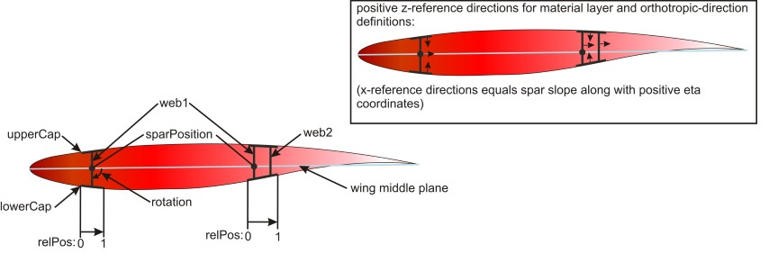

complexType · extension complexBaseType · sequence
Cap
Cross section area of the spar cap and the material properties.
Please find below a picture where all spar cross section parameters as well as the orientation references for the material definition can be found:

| Name | Type | Constraints | Use | Default | Description |
|---|---|---|---|---|---|
@externalDataDirectory | xsd:string | optional | Directory of the external data file | ||
@externalDataNodePath | xsd:string | optional | Path of the node inside the external data file | ||
@externalFileName | xsd:string | optional | Name of the external data file | ||
@uID | xsd:string | optional | UID |
| Name | Type | Constraints | OccurrenceHow often the element may appear at this place. The schema writes it as minOccurs and maxOccurs on the declaration. | Default | Description |
|---|---|---|---|---|---|
| sequenceThe children below must appear in exactly this order. Each may repeat as often as its own occurrence allows. | |||||
area | doubleBaseType | [1..1] required | Area | ||
material | materialDefinitionType | [1..1] required | Material properties | ||
cpacs/vehicles/aircraft/model/wings/wing/componentSegments/componentSegment/structure/ribsDefinitions/ribsDefinition/ribCrossSection/ribCell/upperCapcpacs/vehicles/aircraft/model/wings/wing/componentSegments/componentSegment/structure/ribsDefinitions/ribsDefinition/ribCrossSection/ribCell/lowerCapcpacs/vehicles/aircraft/model/wings/wing/componentSegments/componentSegment/structure/ribsDefinitions/ribsDefinition/ribCrossSection/upperCapcpacs/vehicles/aircraft/model/wings/wing/componentSegments/componentSegment/structure/ribsDefinitions/ribsDefinition/ribCrossSection/lowerCapcpacs/vehicles/aircraft/model/wings/wing/componentSegments/componentSegment/structure/ribsDefinitions/ribsDefinition/ribCrossSection/ribPostcpacs/vehicles/aircraft/model/wings/wing/componentSegments/componentSegment/structure/spars/sparSegments/sparSegment/sparCrossSection/upperCapcpacs/vehicles/aircraft/model/wings/wing/componentSegments/componentSegment/structure/spars/sparSegments/sparSegment/sparCrossSection/lowerCapcpacs/vehicles/aircraft/model/wings/wing/componentSegments/componentSegment/structure/spars/sparSegments/sparSegment/sparCrossSection/sparCells/sparCell/upperCapcpacs/vehicles/aircraft/model/wings/wing/componentSegments/componentSegment/structure/spars/sparSegments/sparSegment/sparCrossSection/sparCells/sparCell/lowerCapcpacs/vehicles/aircraft/model/wings/wing/componentSegments/componentSegment/controlSurfaces/leadingEdgeDevices/leadingEdgeDevice/structure/ribsDefinitions/ribsDefinition/ribCrossSection/ribCell/upperCapcpacs/vehicles/aircraft/model/wings/wing/componentSegments/componentSegment/controlSurfaces/leadingEdgeDevices/leadingEdgeDevice/structure/ribsDefinitions/ribsDefinition/ribCrossSection/ribCell/lowerCapcpacs/vehicles/aircraft/model/wings/wing/componentSegments/componentSegment/controlSurfaces/leadingEdgeDevices/leadingEdgeDevice/structure/ribsDefinitions/ribsDefinition/ribCrossSection/upperCapcpacs/vehicles/aircraft/model/wings/wing/componentSegments/componentSegment/controlSurfaces/leadingEdgeDevices/leadingEdgeDevice/structure/ribsDefinitions/ribsDefinition/ribCrossSection/lowerCapcpacs/vehicles/aircraft/model/wings/wing/componentSegments/componentSegment/controlSurfaces/leadingEdgeDevices/leadingEdgeDevice/structure/ribsDefinitions/ribsDefinition/ribCrossSection/ribPostcpacs/vehicles/aircraft/model/wings/wing/componentSegments/componentSegment/controlSurfaces/leadingEdgeDevices/leadingEdgeDevice/structure/spars/sparSegments/sparSegment/sparCrossSection/upperCapcpacs/vehicles/aircraft/model/wings/wing/componentSegments/componentSegment/controlSurfaces/leadingEdgeDevices/leadingEdgeDevice/structure/spars/sparSegments/sparSegment/sparCrossSection/lowerCapcpacs/vehicles/aircraft/model/wings/wing/componentSegments/componentSegment/controlSurfaces/leadingEdgeDevices/leadingEdgeDevice/structure/spars/sparSegments/sparSegment/sparCrossSection/sparCells/sparCell/upperCapcpacs/vehicles/aircraft/model/wings/wing/componentSegments/componentSegment/controlSurfaces/leadingEdgeDevices/leadingEdgeDevice/structure/spars/sparSegments/sparSegment/sparCrossSection/sparCells/sparCell/lowerCapcpacs/vehicles/aircraft/model/wings/wing/componentSegments/componentSegment/controlSurfaces/trailingEdgeDevices/trailingEdgeDevice/structure/ribsDefinitions/ribsDefinition/ribCrossSection/ribCell/upperCapcpacs/vehicles/aircraft/model/wings/wing/componentSegments/componentSegment/controlSurfaces/trailingEdgeDevices/trailingEdgeDevice/structure/ribsDefinitions/ribsDefinition/ribCrossSection/ribCell/lowerCapcpacs/vehicles/aircraft/model/wings/wing/componentSegments/componentSegment/controlSurfaces/trailingEdgeDevices/trailingEdgeDevice/structure/ribsDefinitions/ribsDefinition/ribCrossSection/upperCapcpacs/vehicles/aircraft/model/wings/wing/componentSegments/componentSegment/controlSurfaces/trailingEdgeDevices/trailingEdgeDevice/structure/ribsDefinitions/ribsDefinition/ribCrossSection/lowerCapcpacs/vehicles/aircraft/model/wings/wing/componentSegments/componentSegment/controlSurfaces/trailingEdgeDevices/trailingEdgeDevice/structure/ribsDefinitions/ribsDefinition/ribCrossSection/ribPostcpacs/vehicles/aircraft/model/wings/wing/componentSegments/componentSegment/controlSurfaces/trailingEdgeDevices/trailingEdgeDevice/structure/spars/sparSegments/sparSegment/sparCrossSection/upperCapcpacs/vehicles/aircraft/model/wings/wing/componentSegments/componentSegment/controlSurfaces/trailingEdgeDevices/trailingEdgeDevice/structure/spars/sparSegments/sparSegment/sparCrossSection/lowerCap| Type | Name |
|---|---|
sparCellType | lowerCap |
sparCellType | upperCap |
sparCrossSectionType | lowerCap |
sparCrossSectionType | upperCap |
structuralWallElementType | innerLongitudinalCap |
structuralWallElementType | outerLongitudinalCap |
wingRibCellType | lowerCap |
wingRibCellType | upperCap |
wingRibCrossSectionType | lowerCap |
wingRibCrossSectionType | ribPost |
wingRibCrossSectionType | upperCap |